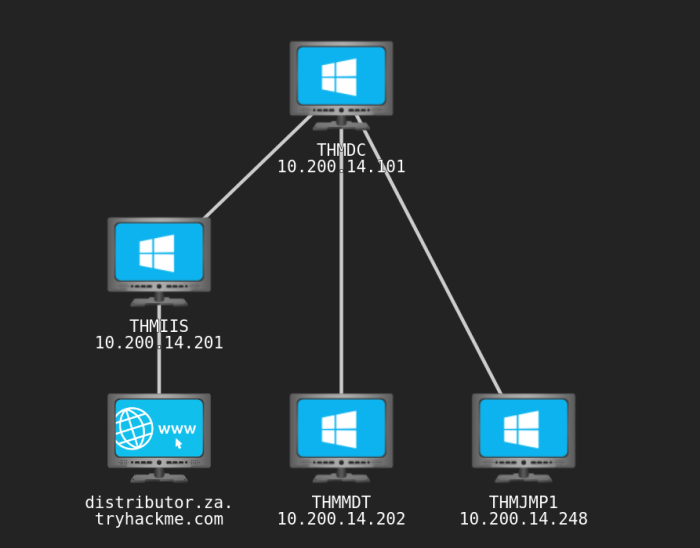
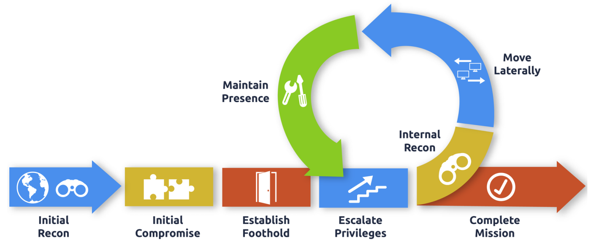
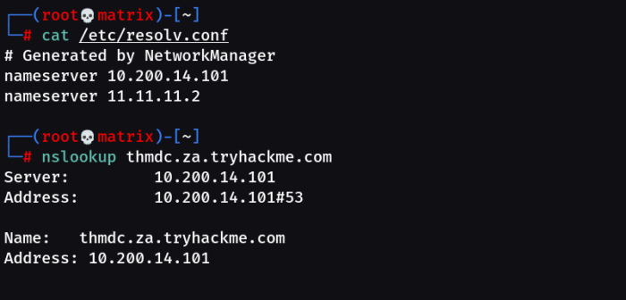
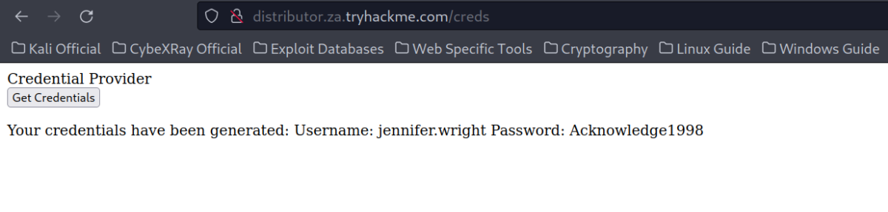

Enumerating Active Directory
AD Enumeration

Once we have that first set of AD credentials and the means to authenticate with them on the network, a whole new world of possibilities opens up! We can start enumerating various details about the AD setup and structure with authenticated access, even super low-privileged access.
During a red team engagement, this will usually lead to us being able to perform some form of privilege escalation or lateral movement to gain additional access until we have sufficient privileges to execute and reach our goals. In most cases, enumeration and exploitation are heavily entwined. Once an attack path shown by the enumeration phase has been exploited, enumeration is again performed from this new privileged position, as shown in the diagram below.

Learning Objectives
In this network, we will cover several methods that can be used to enumerate AD. This is by no means a complete list as available methods are usually highly situational and dependent on the acquired breach. However, we will cover the following techniques for enumerating AD:
• The AD snap-ins of the Microsoft Management Console.
• The net commands of Command Prompt.
• The AD-RSAT cmdlets of PowerShell.
• Bloodhound
Using Networks in Tryhackme:
First, Download a different vpn file. Named: breachingad.ovpn from Tryhackme
Then,
You will have to configure DNS on the host on which you are running the VPN connection. In order to configure our DNS, we must edit the /etc/systemd/resolved.conf file. Uncomment the DNS line and add the IP of THMDC: (As Shown in Network Diagram Above)

Finally, Restart the service:
systemctl restart systemd-resolved
Or
Add the DNS in GUI Network Manager/nmtui tool (1st is the THM DNS then use default in the 2nd place).
and restart the Network Manager service:
systemctl restart NetworkManager
Testing DNS Status
nslookup thmdc.za.tryhackme.com

Requesting Your Credentials
To simulate an AD breach, you will be provided with your first set of AD credentials. Once your networking setup has been completed, on your Attack Box, navigate to http://distributor.za.tryhackme.com/creds to request your credential pair. Click the "Get Credentials" button to receive your credential pair that can be used for initial access.
This credential pair will provide you RDP and SSH access to THMJMP1.za.tryhackme.com. THMJMP1 can be seen as a jump host into this environment, simulating a foothold that you have achieved. Jump hosts are often targeted by the red team since they provide access to a new network segment. You can use Remmina or any other similar Remote Desktop client to connect to this host for RDP. Remember to specify the domain of za.tryhackme.com when connecting. Task 2 and 3 will require RDP access.
For RDP access,
xfreerdp /dynamic-resolution +clipboard /cert:ignore /scale:140 /v:thmjmp1.za.tryhackme.com /u:jennifer.wright /p:'Acknowledge1998'
Note: We can also use the IP as: /v:10.200.14.248
For SSH access, you can use the following SSH command:
ssh za.tryhackme.com\\<AD Username>@thmjmp1.za.tryhackme.com
When prompted, provide your account's associated password. Although RDP can be used for all tasks, SSH is faster and can be used for Task 4, 5, and 6.

Credentials:
Username: jennifer.wright
Password: Acknowledge1998